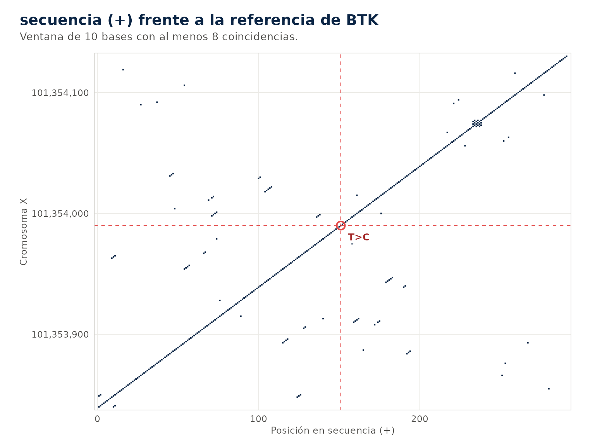
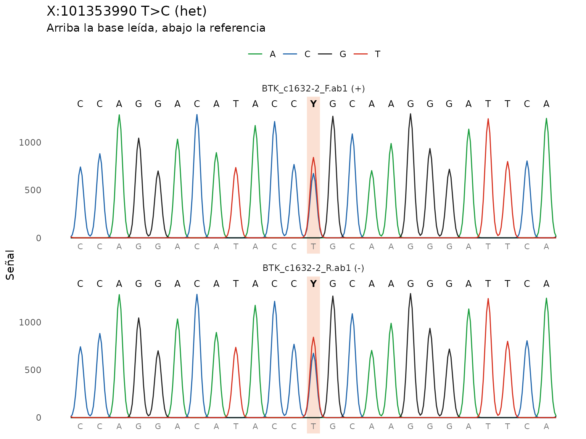
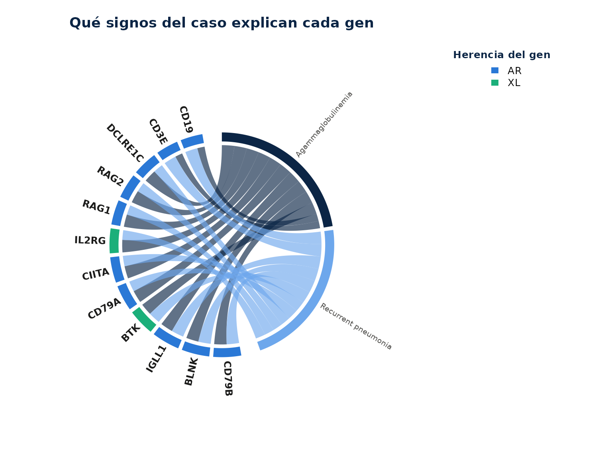

Tres análisis completos con datos que se pueden copiar. Los dos primeros corren sin conexión, porque la referencia de BTK y su anotación de Ensembl VEP vienen dentro del paquete.
ref <- system.file("extdata", "btk_referencia.fa", package = "ieiprio")
vep <- system.file("extdata", "btk_vep.json", package = "ieiprio")1. Una secuencia pegada como texto
Un informe de secuenciación trae la lectura de un varón como texto. Son 300 bases de BTK, de X:101353840 a X:101354139 en GRCh38, con la base 151 cambiada de T a C.
secuencia <- paste0(
"TGTATAATCTGTGTAATCTTATCCACTTACCAAAAGCCCAAATGTCAGATTTGCTGCTGA",
"ACTTGCTATACATCAGGACTTCCGGTGGGGACCACCGGACTGGAAATTTGGAGCCTACTG",
"AGCTTGTGTATTCATCATCCAGGACATACCCGCAAGGGATTCAGGACTTGTTGCATTAGG",
"ATTTGGAGGCTTGATATTTGCTTACGTTTTCTTGGCACGGTCACAAGAGTGTCACAAACA",
"CACACAGGCTTTCTCAAAAGTCTCTCCTCCTCAACTAGTATCTTCTACAAACGTTACTTT"
)
v1 <- iei_sanger(secuencia, gen = "BTK", sexo = "M", referencia = ref)
#> secuencia: hebra +, 300 bases alineadas en X:101353840-101354139, identidad
#> 99.7%.
v1
#> # A tibble: 1 × 16
#> muestra gen chr pos id ref alt genotipo qual dp gq ab
#> <chr> <chr> <chr> <int> <chr> <chr> <chr> <chr> <dbl> <dbl> <dbl> <dbl>
#> 1 sanger BTK X 1.01e8 NA T C hemi NA NA NA NA
#> # ℹ 4 more variables: filtro <chr>, build <chr>, lecturas <int>, fuente <chr>
iei_dotplot(v1)
a1 <- iei_anotar(v1, vep_json = vep)
#> ℹ Sin consultar ClinVar (modo sin red): no hay estrellas ni PS1,
#> PM5 o PM1.
p1 <- iei_priorizar(a1, fenotipo = c("agammaglobulinemia", "neumonía recurrente"))
#> ℹ Fenotipo interpretado como:
#> • agammaglobulinemia → HP:0004432 Agammaglobulinemia
#> • neumonía recurrente → HP:0006532 Recurrent pneumonia
iei_tabla(p1)[, c("gen", "hgvs_c", "genotipo", "consecuencia", "puntaje", "categoria", "acmg")]
#> # A tibble: 1 × 7
#> gen hgvs_c genotipo consecuencia puntaje categoria acmg
#> <chr> <chr> <chr> <chr> <dbl> <chr> <chr>
#> 1 BTK ENST00000308731.8:c.1632-… hemi splice_acce… 13.8 alta PVS1…Lo que deberías ver. Una sola variante, X:101353990 T>C, hemicigota porque el sexo es masculino. La identidad con la referencia es 99.7 %, una base distinta en 300. El dot plot es una diagonal continua con la cruz roja en la posición 151 de la secuencia. La anotación la nombra ENST00000308731.8:c.1632-2A>G, una variante del sitio aceptor de splicing con impacto alto, y la priorización la deja en prioridad alta con PVS1_Strong, PM2_Supporting, PP3 y PP4. Sin conexión no hay estrellas de ClinVar, así que la razón muestra ClinVar patogénica sin el detalle de la revisión.
2. Cromatogramas directo y reverso
El mismo amplicón de BTK secuenciado en un varón afectado y en su hermana portadora. Cada caso tiene una lectura directa y una reversa.
varon <- iei_sanger(iei_ejemplo_sanger("hemi"), gen = "BTK", sexo = "M", referencia = ref)
#> Cromatogramas de ejemplo en /tmp/RtmpVSTNE7/sanger_1e9045ca9746.
#> BTK_c1632-2_F.ab1: hebra +, 461 bases alineadas en X:101353757-101354217,
#> identidad 99.8%.
#> BTK_c1632-2_R.ab1: hebra -, 461 bases alineadas en X:101353758-101354218,
#> identidad 99.8%.
portadora <- iei_sanger(iei_ejemplo_sanger("het"), gen = "BTK", sexo = "F", referencia = ref)
#> Cromatogramas de ejemplo en /tmp/RtmpVSTNE7/sanger_1e905d99f303.
#> BTK_c1632-2_F.ab1: hebra +, 461 bases alineadas en X:101353757-101354217,
#> identidad 99.8%.
#> BTK_c1632-2_R.ab1: hebra -, 461 bases alineadas en X:101353758-101354218,
#> identidad 99.8%.
rbind(varon[, c("pos", "ref", "alt", "genotipo", "ab", "lecturas")],
portadora[, c("pos", "ref", "alt", "genotipo", "ab", "lecturas")])
#> # A tibble: 2 × 6
#> pos ref alt genotipo ab lecturas
#> <int> <chr> <chr> <chr> <dbl> <int>
#> 1 101353990 T C hemi 1 2
#> 2 101353990 T C het 0.445 2
iei_cromatograma(varon)
iei_cromatograma(portadora)
consenso <- iei_consenso(portadora)
consenso
#> # A tibble: 462 × 5
#> pos ref consenso lecturas discordante
#> <dbl> <chr> <chr> <int> <lgl>
#> 1 101353757 A A 1 FALSE
#> 2 101353758 T T 2 FALSE
#> 3 101353759 T T 2 FALSE
#> 4 101353760 G G 2 FALSE
#> 5 101353761 G G 2 FALSE
#> 6 101353762 A A 2 FALSE
#> 7 101353763 A A 2 FALSE
#> 8 101353764 G G 2 FALSE
#> 9 101353765 A A 2 FALSE
#> 10 101353766 A A 2 FALSE
#> # ℹ 452 more rows
p2 <- iei_priorizar(iei_anotar(portadora, vep_json = vep), fenotipo = "agammaglobulinemia")
#> ℹ Sin consultar ClinVar (modo sin red): no hay estrellas ni PS1, PM5 o PM1.
#> ℹ Fenotipo interpretado como:
#> • agammaglobulinemia → HP:0004432 Agammaglobulinemia
iei_reporte(p2, file.path(tempdir(), "portadora.html"), dominios = FALSE)
#> Reporte de "sanger" guardado en
#> /tmp/RtmpVSTNE7/portadora.html.Lo que deberías ver. En el varón la variante es
hemicigota y la fracción alélica es 1, porque el pico de T desaparece y
solo queda C. En la portadora es heterocigota, con cerca de 45 % de la
señal en C y el código IUPAC Y sobre la posición. Las dos lecturas de
cada caso la ven, por eso lecturas vale 2. El consenso es
la secuencia del amplicón con Y en la posición de la variante. En la
portadora la variante queda en prioridad alta por la evidencia de la
variante, y la nota advierte que en una mujer es portadora de un gen
ligado al X. El reporte trae los dos cromatogramas como imagen y no trae
el control de calidad del VCF.
3. Un VCF y el fenotipo
El exoma de ejemplo de un varón con agammaglobulinemia y neumonías recurrentes. Este caso necesita conexión para anotar.
res <- iei_analizar(iei_ejemplo_vcf(), sexo = "M",
fenotipo = c("agammaglobulinemia", "neumonía recurrente"),
carpeta = tempdir())
iei_tabla(res)[, c("gen", "hgvs_c", "genotipo", "puntaje", "categoria", "acmg_clase")]
iei_circos(res)La búsqueda por fenotipo no necesita red.
busqueda <- iei_buscar_fenotipo(c("agammaglobulinemia", "neumonía recurrente"), n = 12)
#> ℹ Fenotipo interpretado como:
#> • agammaglobulinemia → HP:0004432 Agammaglobulinemia
#> • neumonía recurrente → HP:0006532 Recurrent pneumonia
busqueda
#> Genes candidatos por fenotipo (enfermedad)
#> Fenotipo: HP:0004432 Agammaglobulinemia; HP:0006532 Recurrent pneumonia
#> # A tibble: 12 × 6
#> gen similitud especificidad enfermedad herencia categorias_iuis
#> <chr> <dbl> <dbl> <chr> <chr> <chr>
#> 1 CD79B 1 0.372 Agammaglobulinemia … AR 3
#> 2 BLNK 1 0.359 Agammaglobulinemia … AR 3
#> 3 IGLL1 1 0.349 Agammaglobulinemia … AR 3
#> 4 BTK 0.948 0.308 X-linked agammaglob… XL 3
#> 5 CD79A 0.921 0.333 Agammaglobulinemia … AR 3
#> 6 CIITA 0.921 0.277 Bare lymphocyte syn… AR 1
#> 7 IL2RG 0.89 0.316 Severe combined imm… XL 1
#> 8 RAG1 0.89 0.247 Omenn syndrome (OMI… AR 1
#> 9 RAG2 0.89 0.247 Omenn syndrome (OMI… AR 1
#> 10 DCLRE1C 0.89 0.224 Omenn syndrome (OMI… AR 1
#> 11 CD3E 0.797 0.438 Immunodeficiency 18… AR 1
#> 12 CD19 0.797 0.431 Immunodeficiency, c… AR 3
#> Detalle de cada coincidencia en la columna coincidencias. Grafico: plot(x) o
#> autoplot(x).
plot(busqueda, tipo = "acordes")
Lo que deberías ver. De las cinco variantes de ClinVar del ejemplo quedan tres. BTK c.1632-2A>G queda primera en prioridad alta, con clase ACMG probablemente patogénica. RAG1 c.1186C>T queda en prioridad media, el tope para un portador, con la nota que pide buscar una segunda variante. STAT1 queda en prioridad baja, y las dos benignas salen en los filtros de frecuencia y de ClinVar. En el círculo BTK es el punto más alejado del centro, sobre el cromosoma X. La búsqueda por fenotipo pone arriba a los genes de agammaglobulinemia, CD79B, BLNK, IGLL1, BTK y CD79A, todos con similitud cercana a 1, y en el diagrama de cuerdas cada uno recibe cuerdas de los dos signos. La ficha de BTK muestra la herencia ligada al X, la categoría de deficiencias de anticuerpos y las variantes patogénicas de ClinVar sobre la proteína, con el dominio quinasa como el que más concentra.